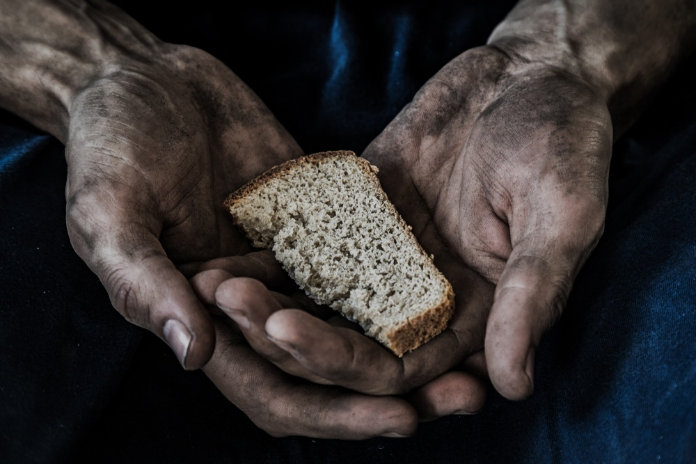

STW: Save The World
A Fome é um problema que engloba todos os aspectos sejam eles políticos, econômicos, culturais e ideológicos dentro de uma sociedade. O caminho para combater a escassez de alimentos e cumprir a meta da humanidade em eliminar a fome até 2030 passa necessariamente por tecnologias como o Agro 4.0 e o uso de IA's generativas que serão ferramentas importantes na tomada de decisões no combate a fome, capazes de controlar o desperdício, acompanhar o crescimento de plantações, desenvolvimento de pragas e detectar escassez pelo mundo. A tecnologia tem um papel ativo e importante nessa luta.

Insegurança alimentar
Acesse o mapa interativo
Metas ODS. 2030
Acesse os slides